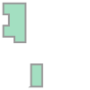
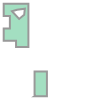

Filtering Data
Spatial Filters
nvcl-kit allows you to filter boreholes based on a polygon geometry. This is particularly useful when you
want to focus on a specific area of interest. You can use any polygon geometry, such as a shapefile, geojson,
or even a manually created polygon using the Shapely library.
Start by loading your Shapefile using the geopandas.read_file() method. The shapefile
should contain a polygon geometry that will be used to filter the boreholes.
import geopandas as gpd
# Load the shapefile. This could also be a geojson file or any other format supported by Geopandas
gdf = gpd.read_file("polygon.shp")
# Check the coordinate reference system (CRS) of the shapefile
print(gdf.crs)
Next, import the necessary modules and initialise the NVCLReader. You can pass the
polygon geometry as a parameter to param_builder(). The reader will then use this polygon to
filter the boreholes and only return those that exist within the polygon. The polygon parameter supports
both shapely.Polygon and shapely.MultiPolygon geometries.
# Import the necessary modules
import pandas as pd
from nvcl_kit.generators import gen_summary_dataframe
from nvcl_kit.param_builder import param_builder
from nvcl_kit.reader import NVCLReader
# Initialise NVCL reader and filter using the first geometry in the GeoDataFrame
param = param_builder("NSW", polygon=gdf.geometry[0])
reader = NVCLReader(param)
if not reader.wfs:
print("Error: Cannot contact service")
By default the reader will assume that a polygon is provided in EPSG:4326. If your polygon uses a different
Coordinate Reference System (CRS), make sure to specify the correct SRID using polygon_srid when building the parameters.
# Initialise NVCL reader with polygon in a different CRS (e.g., EPSG:3857)
param = param_builder("NSW", polygon=gdf.geometry[0], polygon_srid=3857)
reader = NVCLReader(param)
if not reader.wfs:
print("Error: Cannot contact service")
If your polygon contains interior rings (holes), you can ask nvcl-kit to remove them by setting the remove_rings
parameter to True when building the parameters. This will ensure that the filter only considers the exterior boundary
of the polygon(s).
# Initialise NVCL reader with option to remove interior rings from the polygon
param = param_builder("NSW", polygon=gdf.geometry[0], polygon_srid=gdf.crs.to_epsg(), remove_rings=True)
reader = NVCLReader(param)
if not reader.wfs:
print("Error: Cannot contact service")

MultiPolygon with interior rings removed prior to filtering.

MultiPolygon with interior rings (holes).